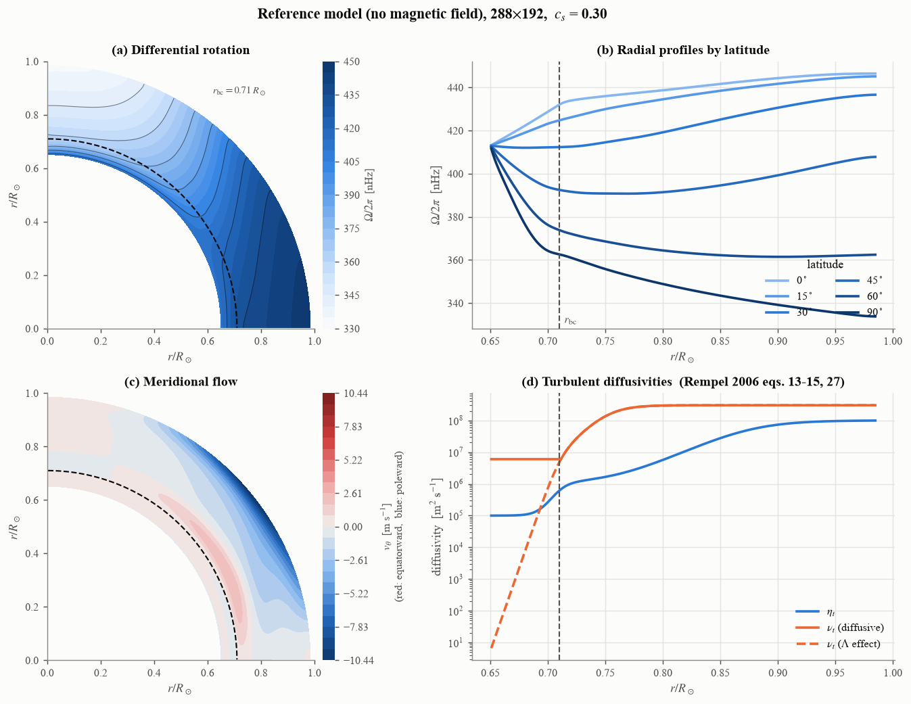
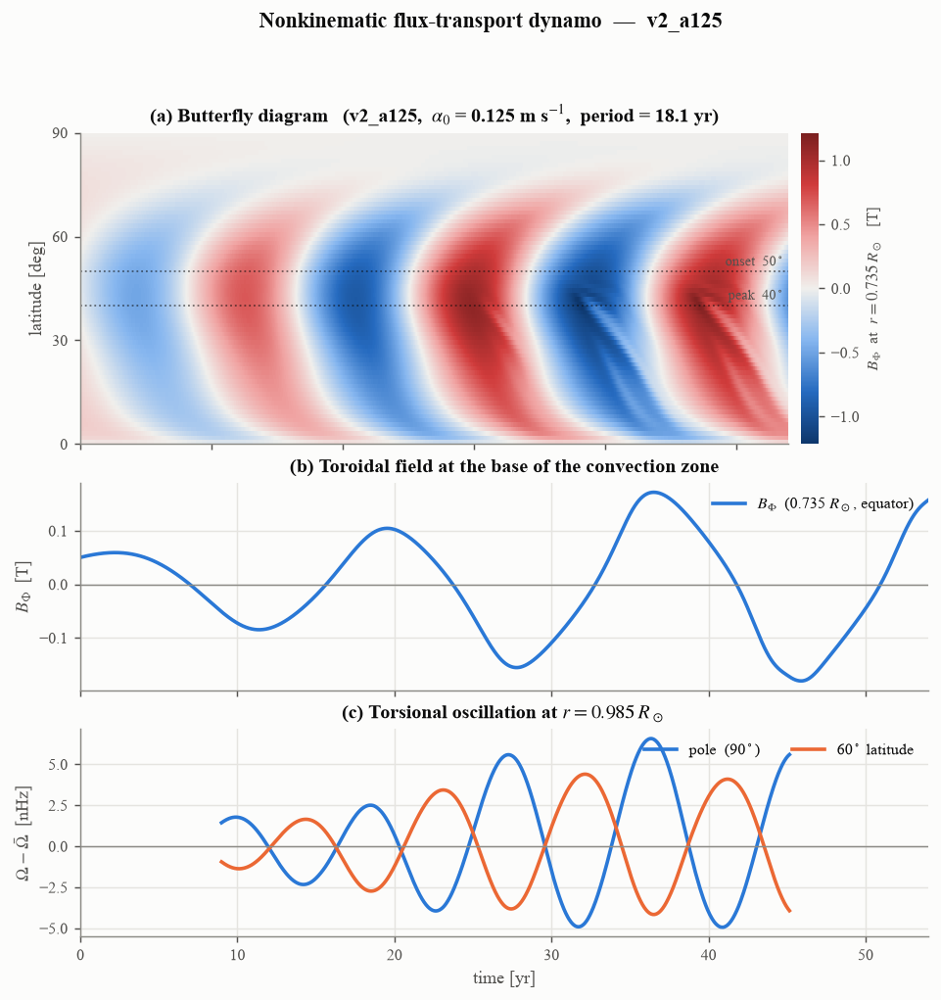
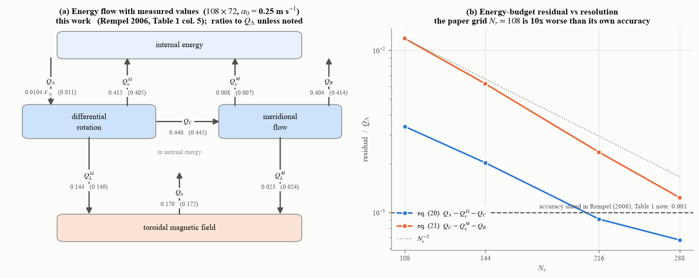

動力学モード (非運動学的ダイナモ)
S2MFD には 2 つのモードがある。
- 運動学的モード (既定)
差動回転と子午面流を**外から与え**、誘導方程式だけを解く。 Jouve et al. (2008) 準拠。Usage を参照。
- 動力学モード (
cfg.dynamics = 'full') 運動量・角運動量・連続の式・エントロピーの式も解き、磁場が 差動回転と子午面流に反作用する。Rempel (2005, 2006) のモデル。 この章はこちらを説明する。
何を解いているか
軸対称 (\(\partial/\partial\phi = 0\)) の平均場 MHD を、音速を人為的に 下げた圧縮性の形で解く。従属変数は
で、\(\rho_1\) と \(s_1\) は球対称な背景 (\(\rho_0\), \(p_0\), \(T_0\)) からのずれ、\(\Omega_1\) は剛体回転 \(\Omega_0\) からのずれ、\(A_\Phi\) はポロイダル磁場のベクトル ポテンシャル (\(\nabla\cdot\boldsymbol{B}=0\) を保証する)。
方程式は Rempel (2006) の式 (1)-(7)。差動回転を駆動するのは :math:`Lambda` 効果 (非拡散的なレイノルズ応力) で、子午面流はコリオリ力 との不均衡から**自発的に生じる**。磁場は Babcock-Leighton 型の \(\alpha\) 効果で維持する。
要素 |
実装 |
|---|---|
\(\Lambda\) 効果 |
Rempel (2005) 式 (31)-(33)。 |
乱流粘性・熱伝導 |
式 (27)-(30)。放射層では拡散項の粘性を対流層の 2 %、熱伝導を 0.2 % に落とす (\(\Lambda\) 効果に使う粘性には落とさない) |
磁気拡散 |
Rempel (2006) 式 (13)-(15)。3 段の tanh プロファイル |
\(\alpha\) 効果 |
式 (16)-(19)。対流層底 [0.71, 0.76] \(R_\odot\) の \(B_\Phi\) を放物線カーネルで平均し、表面近くに源を置く |
音速抑制 (RSST) |
連続の式に \(1/\zeta^2\) を掛ける (\(\zeta = 100\))。 Rempel (2005) 式 (35) |
人工拡散 |
Rempel (2014) の slope-limited diffusion (SLD)。論文にはない
ので、その強さ |
時間積分 |
SSP-RK2 + 中心差分。CFL 安全率は von Neumann 解析の中立点から自動決定 |
参照モデル (磁場なし)
まず磁場なしで流体を緩和させ、\(\Lambda\) 効果が作る差動回転と 子午面流を得る。これが Rempel (2006) の「参照モデル」で、表 1 の列 2 に 対応する。
{kind=link}

緩和した参照モデル (288 \(\times\) 192, sld_cs_factor = 0.30)。
(a) 差動回転。赤道が速く極が遅い。(b) 緯度ごとの動径分布 — 原論文
図 1b に対応する。\(r = 0.65\,R_\odot\) で剛体回転を課しているので
全緯度が 413 nHz に収束する。(c) 子午面流。表面で極向き、対流層底で
赤道向きの 1 セル。(d) 拡散係数。\(\eta_t\) は対流層内で 3 桁変わる。
\(\Lambda\) 効果に使う粘性 (破線) だけ放射層で下限を張らない。
走らせ方:
python runs/relax_scan.py 108 72 40 uniform_rotation myrun \
sld_cs_factor=0.30
引数は 解像度_r 解像度_theta 年数 下部境界 タグ。名前=値 で
cfg を上書きできる。S2MFD_PARFILE でパラメタファイルを選ぶ
(論文設定は parameters/rempel06_paper.py)。
ダイナモ
緩和した状態に種磁場を入れ、ローレンツ力のフィードバックまで含めて回す。
{kind=link}

\(\alpha_0 = 0.125\) m s-1 の解 (108 \(\times\) 72、 60 年)。(a) 対流層底のトロイダル磁場の蝶形図。赤道向きに移動する 活動帯が出る (子午面流による磁束輸送)。(b) 赤道・0.735 \(R_\odot\) の \(B_\Phi\)。周期 18.1 年 (論文 18 年)。 (c) 表面のトーショナル振動。極と緯度 60 度で位相が異なる。
走らせ方:
python runs/dynamo7.py 108 72 0 60 mydynamo full \
alpha0=12.5 magnetic_buoyancy=1 sld_cs_factor=0.30 \
init=results_rempel/myrun/state.npz
full を kinematic にするとローレンツ力を切る (論文 図 3 の参照解)。
alpha0 は cm/s。
エネルギー収支
Rempel (2006) 式 (20)-(22) の収支をそのまま追える
(S2MFD.physics.energy.EnergyBudget)。これはコードが正しく
動いているかの最も強い検査でもある。
{kind=link}

(a) エネルギーの流れ (原論文 図 7) に**実測値**を書き込んだもの。 括弧内は Rempel (2006) 表 1 列 5。8 項すべてが数パーセント以内で一致 する。(b) 収支式の残差。原論文が表 1 の注で明記している精度 0.001 を、論文の格子 ( \(N_r=108\) ) では 10 倍上回る。 解像度とともに 2 次で消える。
Warning
左辺の \(dE/dt\) を落とさないこと。 定常だと思い込んで ゼロと置くと、成長中のダイナモでは残差が入力の 10-25 % に見える。
\(E_\Omega\) の時間微分は 差動回転のエネルギー
(\(\Omega_1\) だけ) で評価する。\(\Omega_0\) の項は全角運動量
保存から解析的に厳密ゼロだが、離散では消えず、本物の信号の 40 倍
残る。詳細は S2MFD.physics.energy.EnergyBudget.budget_residuals()。
確認は:
python runs/budget_check.py mydynamo # ダイナモ
python runs/budget_check.py --relax myrun # 磁場なし
収束性
この実装の付加価値は、論文の数値が未収束であることを定量化した点にある。
解像度と人工拡散の 2 つの極限を独立に取る必要がある。片方だけ振っても 収束先は分からない (人工拡散を弱めると DR は増え、解像度を上げると減る)。

(a) 差動回転の解像度依存。\(c_s\) (人工拡散の強さ) を固定して \(N_r\to\infty\) に外挿すると、\(c_s = 0.30\) と 0.10 が 独立に 0.26-0.27 に来る。論文値は 0.27。 (b) 固定解像度での人工拡散への依存の幅。解像度とともに 2 次で消える。 つまり**二重極限は交換する**。
Warning
外挿の不確かさを小さく見積もらないこと (2026-08-25 に見直した)。 \({\rm DR} = {\rm DR}_\infty + aN^{-p}\) を当てはめると、 4 点ある \(c_s = 0.30\) の系列では
当てはめ方 |
\(c_s = 0.30\) (4 点) |
\(c_s = 0.10\) (3 点) |
|---|---|---|
\(p\) も当てはめる |
0.2661 (p = 2.22) |
0.2642 (p = 2.42) |
\(p = 2\) 固定 |
0.2638 |
0.2532 |
\(p = 3\) 固定 |
0.2714 |
0.2741 |
1 点抜き |
0.2637 - 0.2686 |
(3 点なので不可) |
となる。3 点の系列は自由度がゼロで残差が出ず、\(p\) の 仮定次第で 0.23 から 0.27 まで動く。さらに隣接 2 点の Richardson 外挿 (\(p=2\)) は 0.355, 0.310, 0.284 とまだ動いており、 漸近領域に入り切っていない。
したがって言えるのは \({\rm DR}_\infty = 0.266 \pm 0.003\) (4 点の系列、1 点抜きの幅) まで。「二重極限は 0.264 ± 0.002」「N→∞ 後の :math:`c_s` 依存は 0.0022 しかない」とは言えない(3 点系列自体の幅が \(\pm 0.01\) 以上ある)。論文の 0.27 と整合する、というのが正確な主張である。
Note
飽和判定に注意する。 人工拡散が弱く格子が粗いランは緩和の時定数が
数百年になり、100 年走らせても飽和しない。傾きの閾値だけで判定すると
未飽和のランを通してしまう。runs/convergence.py は緩和曲線
\(DR(t) = DR_\infty - A e^{-t/\tau}\) を当てはめて「残りどれだけ
動くか」を出す。
確認は:
python runs/convergence.py --extrap
原論文との比較

Rempel (2006) 表 1 との比 (108 \(\times\) 72、60 年)。灰色の帯が \(\pm 10\) %。磁場の量とエネルギー交換項はほぼすべて帯の中に入る。
外れているのは 差動回転で 1.12-1.15 倍。これは参照モデルが 108 \(\times\) 72 で 1.19 倍過大なことの持ち込みで、自分の 運動学的参照解で規格化すると 0.96-0.99 になる。
Note
2026-08-25 訂正。 ここには「トーショナル振動が \(\alpha_0\) の大きいほど過小 (0.67-0.70)」と書いてあったが、 これは**振幅の測り方の誤り**だった。幅 18 年の移動平均で永年 ドリフトを引き、両端を捨てていたが、解析区間も 20 年なので**残るのが 2 年ぶんだけ**になり、「末尾 20 年の最大」が「どこか 2 年間の最大」に なっていた。区間内の 1 次トレンドを引く測り方に直すと
\(\alpha_0\) [cm/s] |
90° 計算/論文 |
60° 計算/論文 |
(旧の値 90°) |
格子 |
|---|---|---|---|---|
12.5 |
5.6 / 4.7 = 1.19 |
4.4 / 3.5 = 1.26 |
1.14 |
108×72 |
12.5 |
5.2 / 4.7 = 1.10 |
3.7 / 3.5 = 1.07 |
— |
144×96 |
25.0 |
11.7 / 11.5 = 1.02 |
7.9 / 6.9 = 1.15 |
0.69 |
108×72 |
50.0 |
16.8 / 17.7 = 0.95 |
8.4 / 8.3 = 1.01 |
0.70 |
108×72 |
となり、すべて 1 割前後で合う。詳細は
doc/dev_records/2026-08-24_torsional_pole.md。
なお 20 年の区間に周期 18 年は 1.1 サイクルしか入らないので、
1 次の当てはめが振動を一部吸って振幅を 1 割ほど過大に返す。
論文値との比を 1 割の精度で議論してはいけない。
確認は:
python runs/table1.py mydynamo:12.5
論文からの意図的な逸脱
項目 |
内容と理由 |
|---|---|
磁場の下部境界 |
論文は \(B_\Phi = 0\) (反対称)。本実装の既定は
\(d(rB_\Phi)/dr = 0\) (対称 = 閉じた境界)。
\(r=0.65\,R_\odot\) は放射層の内部で、良導体なら磁場は
蓄えられるべきである。論文自身が §3.2 で「\(B_\Phi\) だけは
closed boundary condition ではない」と認めている。
論文どおりにしたい場合は
どちらでも 2.5 サイクルではダイナモが 0.06 % しか変わらない(下記)。
|
数値スキーム |
論文は MacCormack (交互風上/風下)、本実装は SSP-RK2 + 中心差分
+ SLD 人工拡散。論文には人工拡散の項がないので
|
\(R_\odot\) |
論文は \(7\times10^8\) m、本実装は真の値 \(6.96\times10^8\) m。\(Q_\Lambda\) への影響は 0.7 % |
下部境界の対照実験 (108 \(\times\) 72 の運動学的ダイナモ、45 年 = 2.5 サイクル、物理は同一):
\(t\) [yr] |
0.735 \(R_\odot\) 赤道の相対差 |
放射層 (\(r<0.71\,R_\odot\)) の磁束の相対差 |
|---|---|---|
5 |
\(8.7\times10^{-13}\) |
3 % |
15 |
\(1.4\times10^{-6}\) |
17 % |
30 |
\(3.3\times10^{-4}\) |
101 % (符号反転の時期) |
45 |
\(6.4\times10^{-4}\) |
32 % |
境界の影響は放射層に閉じ込められていて、対流層のダイナモには届かない。 \(\max|B_\Phi|\) は 1.4169 対 1.4168 T、\(\max|B_r|\) は 5 桁一致。
Note
放射層の磁気拡散時間は \(L^2/\eta_c\) = 516 年 = 周期の 29 倍。 45 年ではその 1/10 も見ていないので、数十サイクル後の蓄積の差は 判定できていない。見るには数百年の積分が要る。
未解決として、収束解の \(Q_\Lambda\) が論文より 11 % 低い。 \(\Lambda\) 効果の式・規格化・パラメタは一項目ずつ照合して すべて一致している。
参考文献
Rempel, M. 2005, ApJ, 622, 1320 — 差動回転と子午面流のモデル
Rempel, M. 2006, ApJ, 647, 662 — ローレンツ力を含む磁束輸送ダイナモ
Rempel, M. 2014, ApJ, 789, 132 — slope-limited diffusion